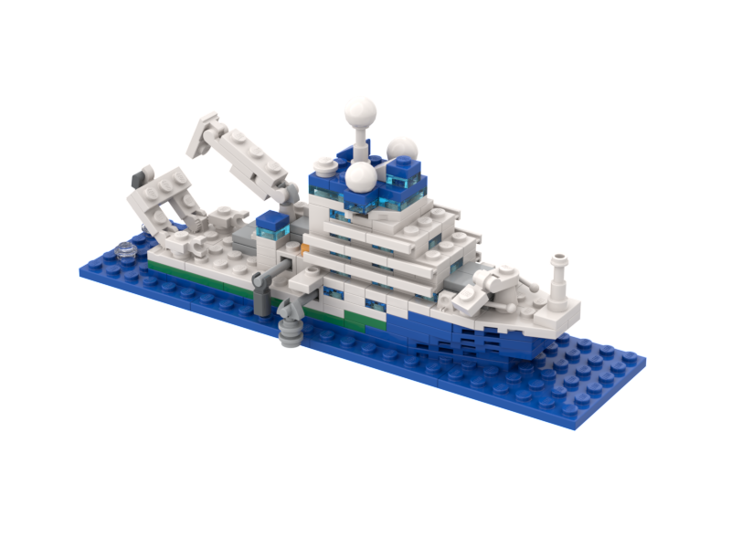
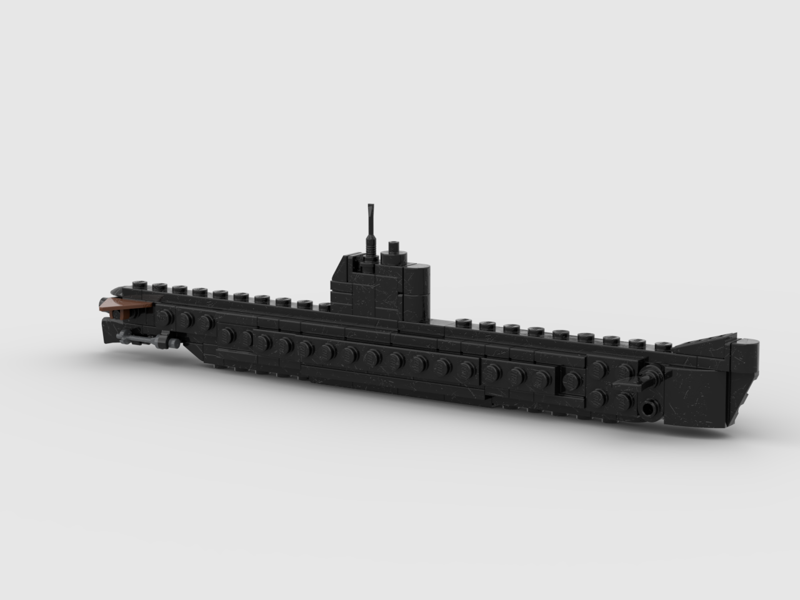

World Class Blue Ocean Research Vessel |
Instructions click on image to download PDF or 'right-mouse' for image |
HMAS Ovens |
HMAS Ovens at the Western Australian Maritime Museum Instructions click on image to download PDF or 'right-mouse' for image |